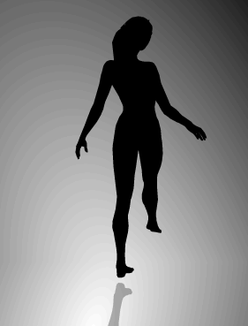

收到蔡蔡从深圳快递给我的泰国自助游手册，这姑娘才和朋友从苏梅岛自由行回来，据说假度的很开心。其实她完全没必要为我做这些，回想过去她洋洋洒洒写来的信透着与她年龄不相符的纯真（又一高龄的少女情怀），心里说不出的感动。再看看现在上窜下跳满脸无辜满肚子坏水的小P孩，简直无法想象他们发育的速度。

蔡蔡在苏梅岛做SPA的地方，真想一头扎进画面里去。

星期三，淡蓝色衬衫两侧是针织面料带收身效果的设计。5年前穿上它总感觉老气横秋，一旦自己老气横秋了之后这件衬衫却变得那么鲜嫩。换了合身牛仔裤和柔软的浅口鞋。


在“shanshu”上看到一个有趣的测试，无论是拇指还是手臂看，我都是左脑使用者，即“左左人”。如坊间流传的那样，左脑擅长理性思维、计算、沟通和设计，右脑则是个梦想家，更为感性和情绪化，这叫做“大脑功能一侧化”。两个半球就像夫妻，通常一起对事情发表看法，可是有时也会配合不好，任由一方主导行为，像一个伪“裂脑人 ”。
一百多年前，“杰基博士”诞生于英国作家斯蒂文森笔下，博士将药物注射进手臂，又变出一位“海德先生”，两个分身一善一恶，互相角力。这个《化身博士》的故事，显示同一个人可能拥有两种性格、两股意识，用后世心理学家创造的术语，叫“双重人格”。人格分裂症患者固然不常见，但你们看，很明显好多人伪装成那样子，白天不懂夜的黑，看起来很快活。
那么“shanshu ”那句签名“做让别人喜欢的人....”太困难了，除非人格彻底分裂，再说讨好的人里面什么鸟都有，何必那么辛苦自己？该怎么着怎么着，年年岁岁，有人猝死，让咱善良地活在自然状态下别逼自己好吧？别人喜不喜欢你，真那么重要吗？不重要，真的不重要。只要你在乎的人喜欢你就行。推荐《YES MAN》看看吧。
1.像祈祷一般，将双手交握起来... 看看你的双手
左手拇指被押在右手拇指下的---------------------->左脑使用者
右手拇指被押在左手拇指下的---------------------->右脑使用者
2.将你的双手交叉环在胸前(揽住自己~~) 再看看你的双手
右臂压住左手臂的------------------------------>左脑使用者
左手臂压住右手臂的---------------------------->右脑使用者
从1+2来看你的结果(要照1→2顺序看)
右左人：善于体贴他人的传统温婉类型
能直觉了解对方的心情，并自然和善对应的右左人。虽然无法主动积极的向前，但却会后退一步来迁就人，生性稳重且贴心，给人一股凡事都会好好照顾他人的安心感.不过一旦被拜托过一次，往后就很难再对他人说NO就是最大的缺点。不管自己有多么的痛苦也会为他人鞠躬尽瘁....这种热情堪称天下第一！
右右人：最爱自己的挑战类型
生性勇往直前，一旦认定〔就是这个！〕时就会马上采取行动！这就是好奇心旺盛最爱挑战的右右人。凭着一股气势就能够坦然挑战危险事物的鲁莽一族。但另一方面亦具有被抓住弱点时就很容易被打动的鲜细脆弱一面...。基本上，不听他人的话，会跳着听谈话的内容，也很容易就以主观意识说话。不过也因这般充满个性的缘故而备受众人喜爱，往往能成为人气者唷！
左左人：认真又冷酷的完美主义者
虽颇有女人(男人)味，但却是在这四种类型中最具有男子气概！凡事都能条理分明的理论性思考，会凭着一篇大道理迅速打败他。自尊心极高，正义感也比他人多上一倍。做为朋友是很值得信赖，但若与之为敌就会很棘手的类型。只不过，因生性认真又是完美主义者，常会让初次见面的人留下难以相处的不好印象。
左右人：喜欢照顾人，领导型
具有冷静的观察力能看透对方或现场的气氛，但亦具有能体贴入微照顾对方的一面，这就是兼具冷静与温情的左右人。因生性冷静，颇具男子气概且责任感强烈，像个大姐头般常会受到同性的爱慕。能自然聚集人群并与之俐落相处。只不过，有时也会忍不住太爱照顾他人。相当在意世人如何看待自己，总是保持警觉心。
*****************************************************
另一个有趣的测试：你是用左脑，还是右脑？我看了10秒钟这个舞女就开始逆时针转了，然后我醒醒眼睛定睛再看又变成顺时针@_@，10秒后继续逆时针......左右脑在打架吗？

如果你看见这个舞女是顺时针转，说明你用的是右脑，如果是逆时针转，用的是左脑。耶鲁大学耗时5年的研究成果，据说14%的美国人可以两个方向都能看见。
右半脑发达的人：知觉、想像力、空间感和把握全局的能力都有可能更强一些。在各种动作上相对更敏捷一些。右脑最重要的贡献是创造性思维，不拘泥于局部分析，而是统观全局，以大胆猜测跳跃式地前进达到直觉的结论。在有些人身上，直觉思维甚至变成一种先知能力，使他们能预知未来的变化，事先做出重大决策。
左脑的记忆回路是低速记忆，而右脑的是高速记忆，左脑记忆是一种“劣根记忆”，右脑记忆则让人惊叹，它有“过目不忘”的本事。
左脑发达的人：处理事情有逻辑、条理。社交场合活跃，善于判断各种关系和因果，善于统计、组织且方向感强。左脑发达善于做技术类、抽象的工作（如电脑编程）。
男性是根据右脑和左脑各自不同的分工来使用大脑的。相比之下，女性却可以同时使用左脑和右脑。男性和女性大脑的最大区别主要是大脑皮层的构造不同，女性大脑的沟通交流能力特别发达，她们细致、敏感，能够通过察言观色来了解对方的心理，直觉也很灵敏。从构造上看，女性左右脑的脑梁部分粗于男性，因此左右脑可以顺利地同时使用。多数男性方向感天生就比女性强。